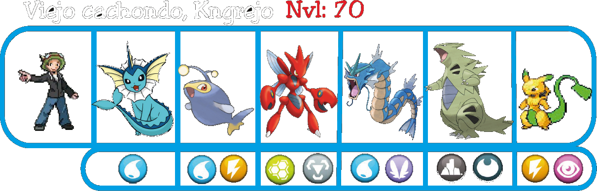
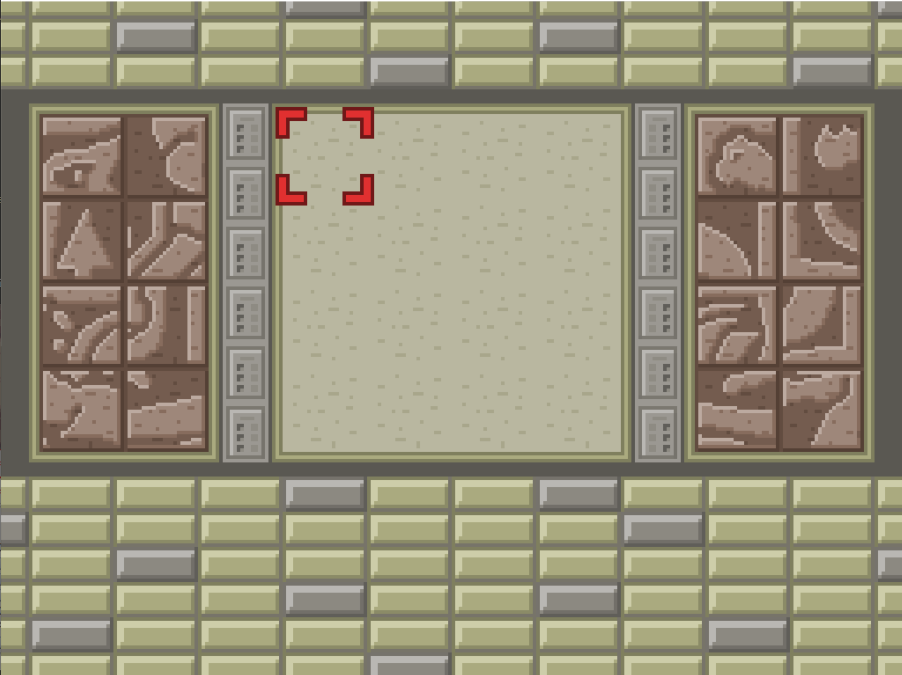
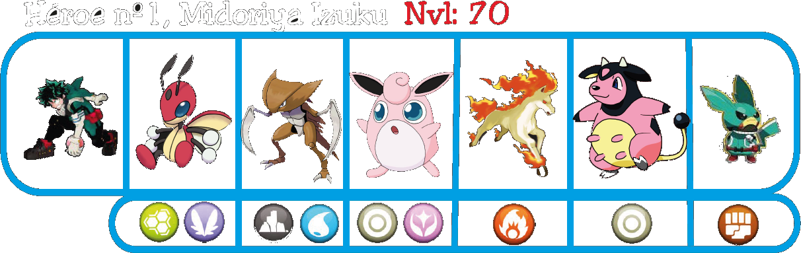
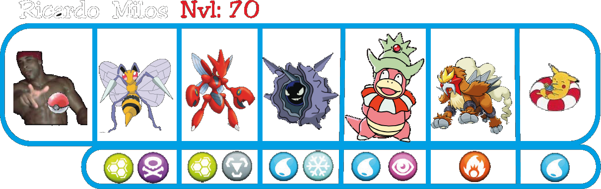
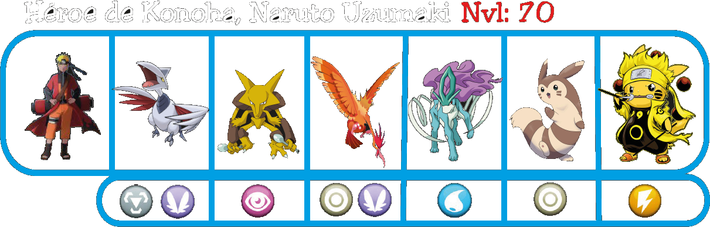

Cueva de las Leyendas
Para llegar a la Liga Pokemoito primero tienes que pasar por la Cueva de las Leyendas, un lugar donde se reúnen los entrenadores más fuertes. Se encuentra al Oeste del Pueblo del Comienzo, el lugar donde empezó tu aventura.
Una vez dentro de la cueva, sigue el camino hasta encontrarte con el primer entrenador, Ash.
Con Ash derrotado, continua el camino hasta llegar a la estatua con el botón oculto y púlsalo, caerá una roca en la entrada de la cueva y tendrás que ir a empujarla hasta ponerla encima de su base.
Posición inicial de la roca tras pulsar el botón.
Roca colocada en su base.
Ahora nos dirigiremos hacia donde nos encontramos a Ash, se habrá abierto una escalera a su izquierda donde podremos seguir el camino hasta encontrar a Knekro.
Después de ganarle, aparecerán las escaleras que nos llevan al piso inferior de la cueva.
Aquí deberemos caminar sobre el agua y encontraremos a Deadpool.
Luego, utiliza el regalo de Jessie y James para subir por la cascada y entrar a una zona con un rompecabezas, complétalo para abrir una entrada oculta a la izquierda de Deadpool.
Al cruzar la nueva entrada apareceremos en la última zona de la cueva, y encontrarás una enfermera que cuidará de tus Pokemoitos.
En esta zona, tendrás que derrotar a otros 4 entrenadores legendarios antes de avanzar, primero encontraremos a Eren al subir las escaleras de la montañita.
Derrotándolo, obtendremos el acceso al teleport que te llevará a una nueva zona, encontrando allí a Midoriya Izuku para desafíarle.
Luego de derrotarlo seguiremos avanzando con el teleport, llegando a la zona de Ricardo Milos.
Al terminar con él, avanzaremos hasta el último enemigo de la zona, Naruto Uzumaki.
Una vez derrotado, podrás salir de la cueva finalmente y enfrentarte a la Liga Pokemoito. Allí encontraras a gente dispuesta a apoyarte y darte ánimos de cara a tu desafío.